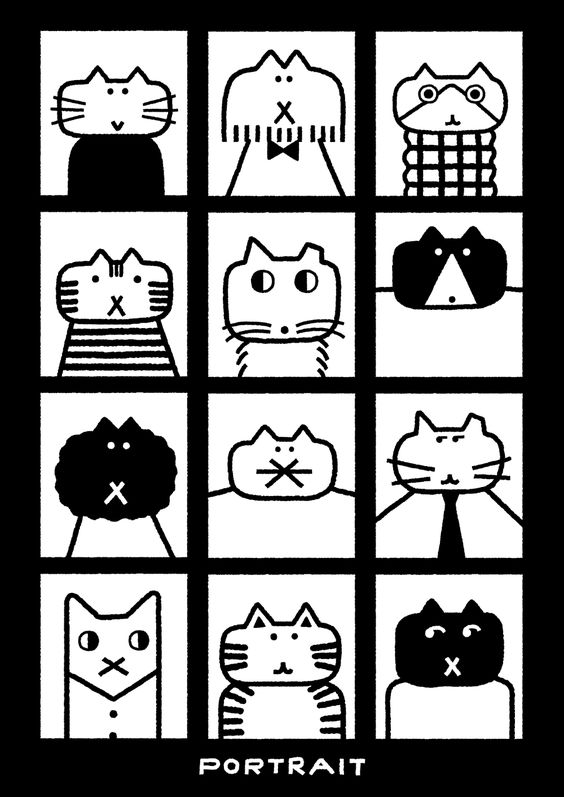
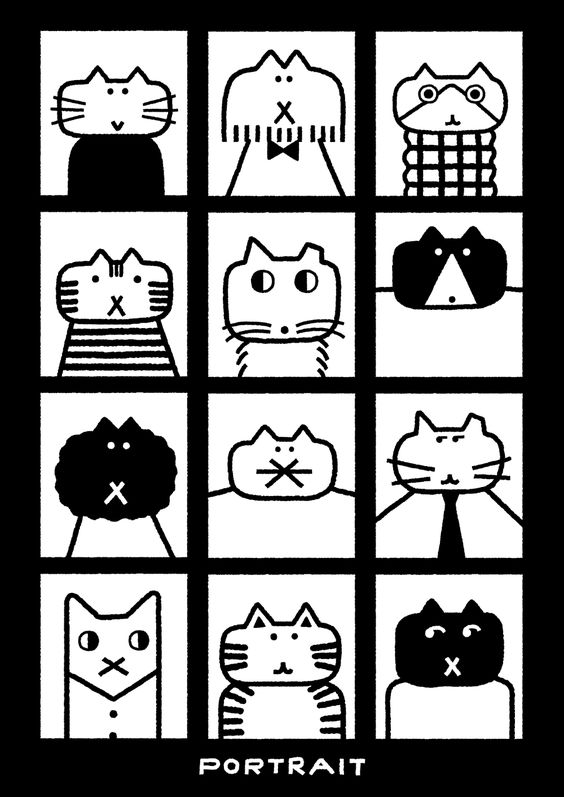

I was heavily influenced by the cat portrait image from pinterest, so that became my main idea for the index. I also really wanted to include a brush tool for the user to colour in the cats themselves. I did a lot of trial and error and had trouble with getting the strokes when the mouse is clicked to show up in the background for transparent images. The mouse would drag or highlight the image when it clicks on the image.
In this attempt, (the blue square is the image being highlighted) the brush strokes are appearing behind the sketch because the mouse was held down from the areas of the canvas (non-highlighted area). The brush strokes wouldn't appear on the sketch when I directly clicked on it.
Unfortunately, I had to move on for now and try something else that will work for this project. I decided to colour the cats myself and allow the user to interact with the page by clicking. I also changed the layout to two rows of 4 columns to allow the user to click to a next page and recreate the feeling of turning a page.

I drew and coloured the images on an iPad then created a click function in javascript to change the image to a different one when it is clicked. I wanted the eyes to move and be interactive so I drew them in CSS and animated them to move when the mouse is hovering over the cat.